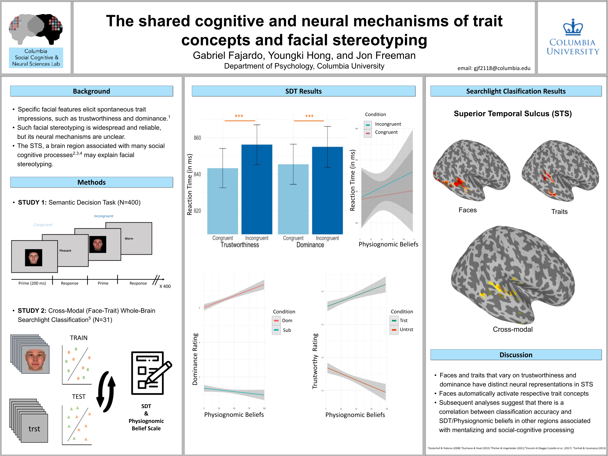

Hi! My name is Gabriel Fajardo, and I am the lab manager in the
Social Cognitive and Neural Sciences Lab
at Columbia University (PI:
Jon Freeman). My research interests are at the intersection of social psychology
and cognitive neuroscience, with an emphasis on computational
approaches, or Computational Social Neuroscience.
I aim to study the mechanisms through which the social brain
efficiently and effortlessly makes sense of the rich, dynamic, and
high-dimensional information from the social world. Additionally, I am
interested in the difference between social and non-social perception.
I was born in Lima, Peru, but I moved to Montgomery, NJ (next to
Princeton) when I was 6 years old. I graduated from Boston College in
Spring 2023, where I worked in the
Social and Cognitive Computational Neuroscience Lab
with Stefano Anzellotti. My research at BC utilized multivariate
statistical dependence analyses based on neural networks (MVPN) to
identify brain regions responsible for audio-visual integration.
Outside of research, I enjoy soccer, films, and exploring NYC!
Fajardo, G., Fang, M., Anzellotti, S. (Under Review). Distinct Brain Regions Combine Auditory Representations with Different Visual Streams.
Prince, J.S., Fajardo, G., Alvarez, G.A., Konkle, T. (May, 2024). Manipulating dropout reveals an optimal balance of efficiency and robustness in biological and machine visual systems. International Conference on Learning Representations 2024.
Fajardo, G., Chwe, J.A., Davachi, L., Freeman, J. (April, 2024). The neural basis of social categorization and individuation. Poster presented at the Social and Affective Neuroscience society annual conference, Toronto, Canada.
Fajardo, G., Hong, Y., Freeman, J. (February, 2024). The shared cognitive and neural mechanisms of trait concepts and facial stereotyping. Poster presented at the Society for Personality and Social Psychology annual convention, San Diego, CA.
Prince, J.S., Fajardo, G., Alvarez, G.A., Konkle, T. (August, 2023). Dropout as a tool for understanding information distribution in human and machine visual systems. Poster presented at the Cognitive Computational Neuroscience annual conference, Oxford, UK.

Fajardo, G., Alvarez, G.A., Konkle, T., Prince, J. (July, 2022). Artificial vision model features most predictive of neural data. Poster presented at the Leadership Alliance National Symposium, Hartford, CT.

People form personality trait impressions from the glimpse of a face. Most of the work that tries to propose which specific traits are inferred from the face has relied on a relatively small set of white male faces and preselected trait words; however, recent work from Dr. Chujun Lin (2021) impressively gathers (1) 100 trait words that are commonly used to describe faces, and (2) 100 facial stimuli that have maximum variability in facial structure. Using Dr. Lin's methods, we have created an expansive face dataset, diverse in both gender and race. We plan to analyze the neural representational structure of the face-trait space and the added influence of race & gender on facial stereotyping.
In collaboration with Dr. Brent Hughes, we are following up on his prior research (2019), which found that white participants showed a greater tendency to individuate white faces based on neural release from adaptation. In this new work, we will assess how emotional expressions, specifically anger and happiness, moderate this effect.
Using an exciting dataset where six participants watched six seasons of the popular TV show Friends while undergoing fMRI scanning, we aim to explore how neural representations of the characters change over time, along with several other intriguing ideas.
Post-bac, lab manager, and RA full-time paid postings
Freeman Lab Coding Bootcamp (summer 2024)
Freeman Lab Intro to fMRI Bootcamp (summer 2024)